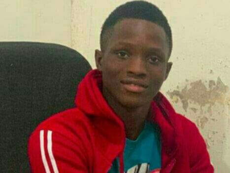
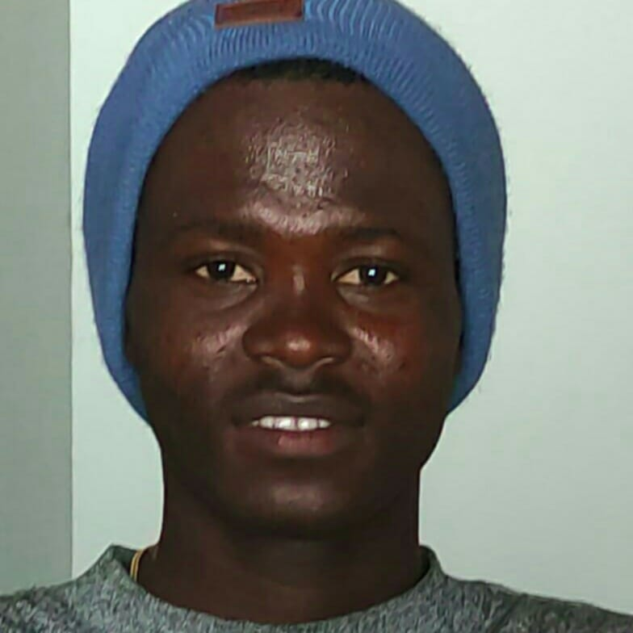

Our team comprises of seven members, each specializing in
different fields. When we combine our expertise, it brings our work to life,
which is why we are considered a team of inspiring developers.
Daniel Cammue
Daniel is a certified immediate python programer at Jetroweb Development co-orp in Liberia.he graduated from the William V.S. Tubman High School 2023.
and where selected among
forty five (45) students to study introduction to programming.
After that training climax by Jeffrey Elkner (2022) a renowed Computer Professor
at The Arlington Career School Center and a major contributor to book Think Python by Allen Doweney.
Before Jeffrey departure to America he asked Daniel and the other seven to found a worker cooperation called Jetro Web Development.
Thomas Boimah
Thomas is a certified immediate python programer at Jetroweb Development co-orp in Liberia. he graduated from the William V.S. Tubman High School 2023,
and where selected among
forty five (45) students to study introduction to programming.
After that training climax by Jeffrey Elkner (2022) a renowed Computer Professor
at The Arlington Career School Center and a major contributor to book Think Python by Allen Doweney.
Before Jeffrey departure to America he asked Thomas and the other seven to found a worker cooperation called Jetro Web Development.
Freena Koikoi
Freena is a certified immediate python programer at Jetroweb Development co-orp in Liberia. he graduated from the William V.S. Tubman High School 2022,
and where selected among
forty five (45) students to study introduction to programming.
After that training climax by Jeffrey Elkner (2022) a renowed Computer Professor
at The Arlington Career School Center and a major contributor to book Think Python by Allen Doweney.
Before Jeffrey departure to America he asked Freena and the other seven to found a worker cooperation called Jetro Web Development.

Mulbah Kolleh
Mulbah is a certified immediate python programer at Jetroweb Development co-orp in Liberia.
he graduated from the D.Twe Memorial High School 2023,
He took charge of the team, provided a location for them to continue operations, and helped the co-op survive a critical transition period. His intervention was key in keeping the momentum alive until the program became officially registered in Liberia. Spencer's commitment brought structure, continuity, and a safe space to grow.
Shallon Vaye
Shallon is a Web Developer at Jetroweb Development co-orp in Liberia. she graduated from the William V.S. Tubman High School 2023,
and where selected among forty five (45) students to study introduction to programming. After that training climax by Jeffrey Elkner (2022) a renowed Computer Professor
at The Arlington Career School Center and a major contributor to book Think Python by Allen Doweney.
Before Jeffrey departure to America he asked Shallon and the other seven to found a worker cooperation called Jetro Web Development.
Janet Kollie
Janet is a Web Developer at Jetroweb Development co-orp in Liberia. she is a graduate of the G.W. Gibson High School Academic (2024),
and where selected among forty five (45) students to study introduction to programming. After that training climax by Jeffrey Elkner (2022) a renowed Computer Professor
at The Arlington Career School Center and a major contributor to book Think Python by Allen Doweney.
Before Jeffrey departure to America he asked Janet and the other seven to found a worker cooperation called Jetro Web Development.

Gabriel Washington
Gabriel is a certified immediate python programer at Jetroweb Development co-orp in Liberia. he graduated from the William V.S Tubman High School 2022,
and where selected among forty five (45) students to study introduction to programming. After that training climax by Jeffrey Elkner (2022) a renowed Computer Professor
at The Arlington Career School Center and a major contributor to book Think Python by Allen Doweney.
Before Jeffrey departure to America he asked Gabriel and the other seven to found a worker cooperation called Jetro Web Development.
Spencer at PyCon Africa in Accra
I want to thank Jeffrey Elkner and Jetro Web Development for providing me with this memorable opportunity.
During my time in Accra for PyCon Africa at the University of Ghana, I had the chance to meet a team
of developers and attend a series of lectures presented by veteran Pythonists.
Numerous topics were covered, including: Utilizing LLM Agent for Efficient Requirement Analysis and
Specification, Unleashing Data Science Potential, Building A Realtime Data Capture Stream, Effortless
API Translations in Django: Leveraging Headers for Dynamic Localization, Building your Python Cloud &
Serverless application locally using LocalStack, LLM Agent, Automating your Life with Python Scripts,
and Scaling Financial Services with Python Asyncio. Despite the wide range of topics, my primary
focus was on Django-related sessions."
Trip itinerary
My trip to Ghana for PyCon Africa was primarily aimed at networking with fellow developers and immersing myself in the vibrant tech community. On Monday, September 23rd, Kojo Kwain, a driver assigned by Plav Vanda Hotel, escorted me to the Cedi Conference Centre at the University of Ghana, where PyCon Africa was hosted. Being unfamiliar with the area and representing Jetro Web, I relied on Kojo to ensure I safely navigated the city of Accra and efficiently attended the conference throughout my stay.
The conference itself was exhilarating, providing numerous opportunities to connect with developers from diverse backgrounds. Following my itinerary, I made it a point to wake up before 6:00 AM every day to prepare for the day's presentations, ensuring I didn't miss any sessions of interest. This routine continued diligently over the five-day period until my departure.
My time in Ghana was immensely rewarding, allowing me to engage with like-minded professionals and gain insights into the latest trends in technology, Ghana is definitely the hub of Africa technology.